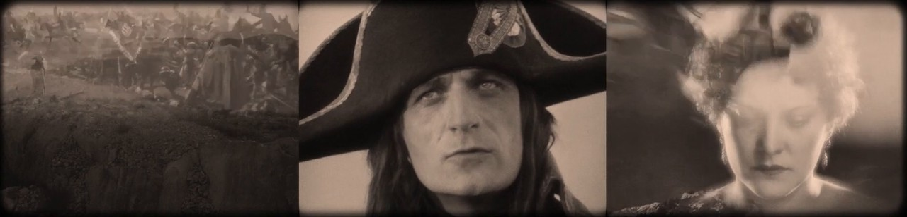

Napoléon, frame at 6:58:23
Abel Gance · 1927 · Silent film, tinted in this copy (frame)
Free to use
The finale was projected across three screens side by side from three synchronised projectors, a process called Polyvision, and Napoléon is the only film that used it. When Metro-Goldwyn-Mayer bought the film it was cut drastically, and only the central panel of the three was kept for the American release. Kevin Brownlow, who as a boy bought two 9.5 mm reels of it at a street market, spent twenty years restoring it.